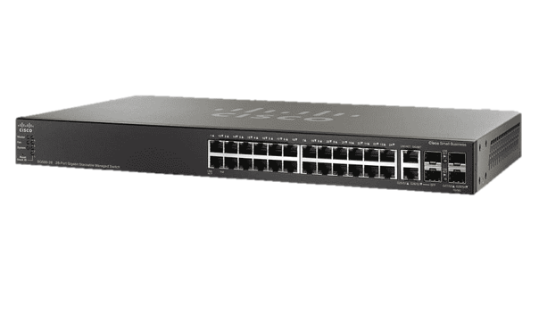
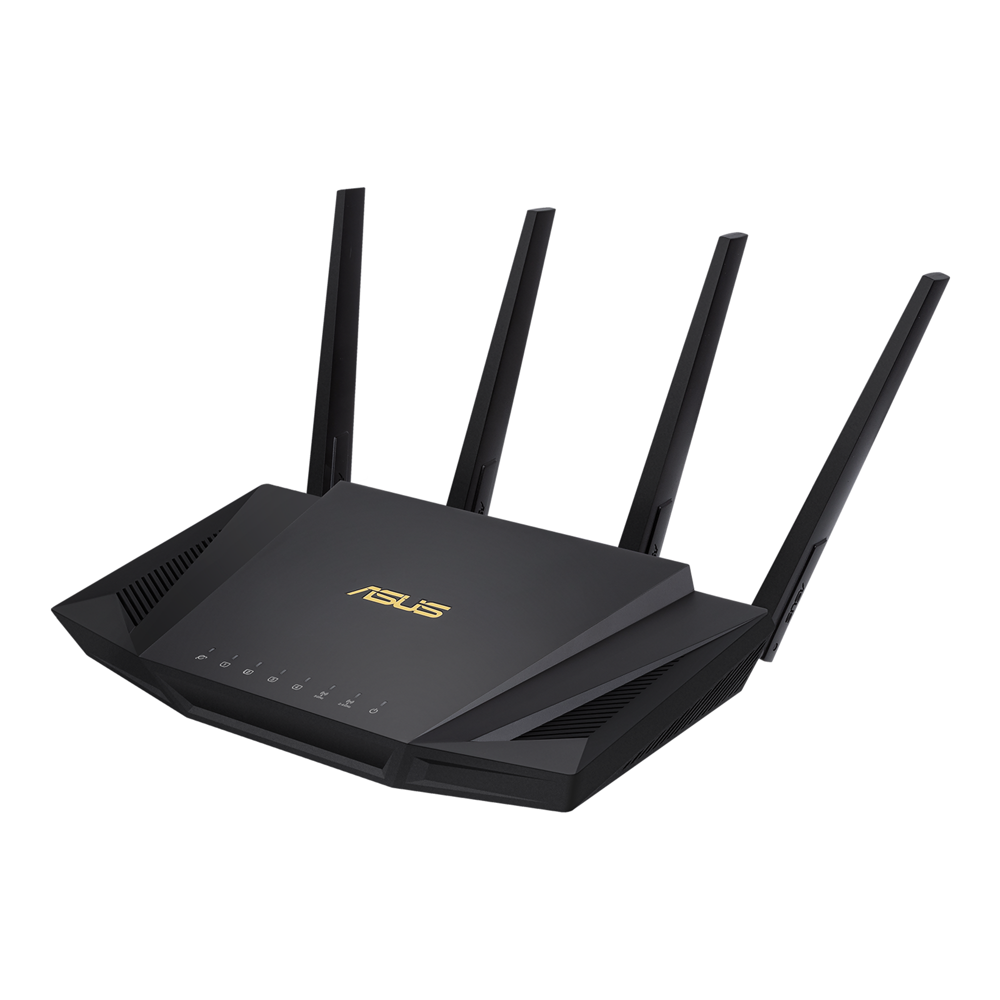

A kis- és közepes vállalati hálózatokban számos fontos összetevő található, amelyek összehangolt működésével biztosítják a hatékony hálózati kommunikációt és adatátvitelt. Ezek közé tartoznak például a következő fontos eszközök:
A kábelrendező szekrényekben találhatók az Ethernet kábelek csatlakoztatásához szükséges panelek és kapcsolók. Ezek a szekrények a kábelek rendezésére és védelmére szolgálnak, valamint könnyű hozzáférést biztosítanak a kábelek csatlakoztatásához és karbantartásához.

A kapcsolók olyan eszközök, amelyek összekötik a különböző számítógépeket és eszközöket a hálózaton, és lehetővé teszik az adatcsomagok gyors és hatékony átvitelét azok között. A kapcsolók segítenek minimalizálni a hálózati torlódásokat és növelik a hálózati sebességet.
A forgalomirányítók felelősek az adatcsomagok továbbításáért a különböző hálózatok között. Ezek az eszközök döntik el, hogy az adatcsomagok mely irányba kerüljenek továbbításra a hálózaton belül vagy kívül.
Az összeszerelés és beállítás során fontos figyelembe venni az eszközök megfelelő csatlakozási módjait és a hálózati konfigurációkat. Például a kapcsolók és routerek esetében be kell állítani az IP-címeket, alhálózati maszkokat, valamint az útvonalakat a kívánt hálózati működés biztosítása érdekében. Fontos, hogy az eszközök megfelelően legyenek konfigurálva a biztonság és hatékonyság érdekében.